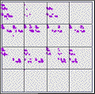
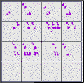
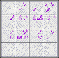

For differences of data, another natural division scheme is to take
| B3 = q*A |
| B2 = 0 |
| B1 = -q*A |
Unlike equal-size and equal-weight bins, there is a whole family of zero-centered bins, depending on the value taken for q. Different choices of q emphasize different aspects of the data.
Here are driven IFS with three choices of q. Click the picture to enlarge.
|  |  |  |
| q = 0.5 | q = 0.25 | q = 0.1 |
A more subtle problem is to quantify how these driven IFS change as q ranges from 0 to 1.
Return to Sample.